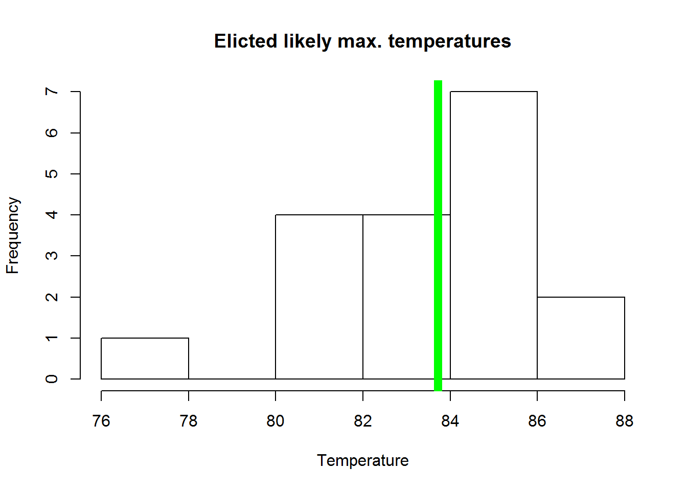
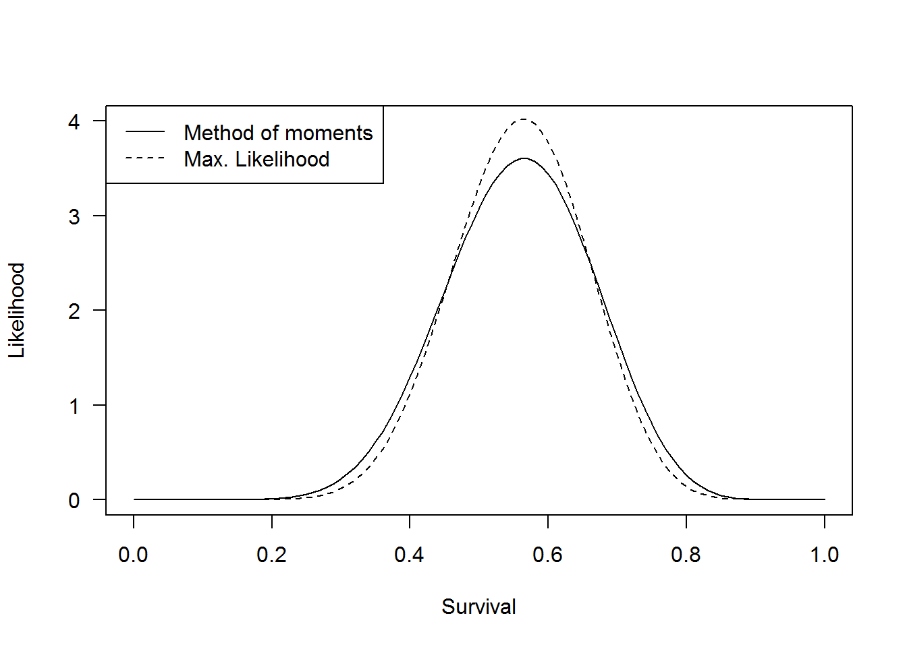
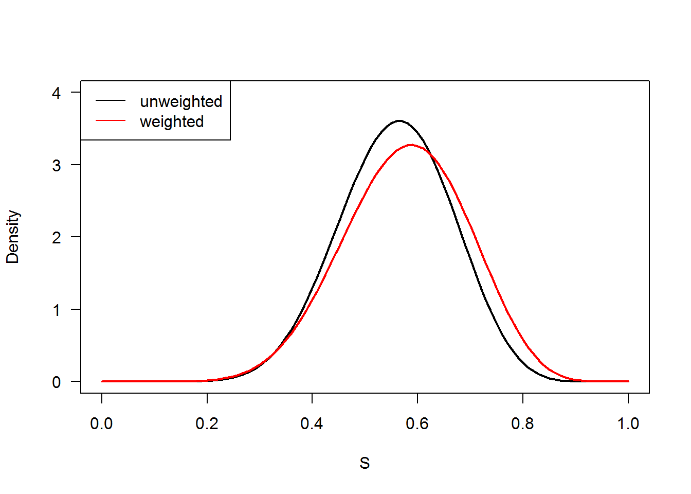
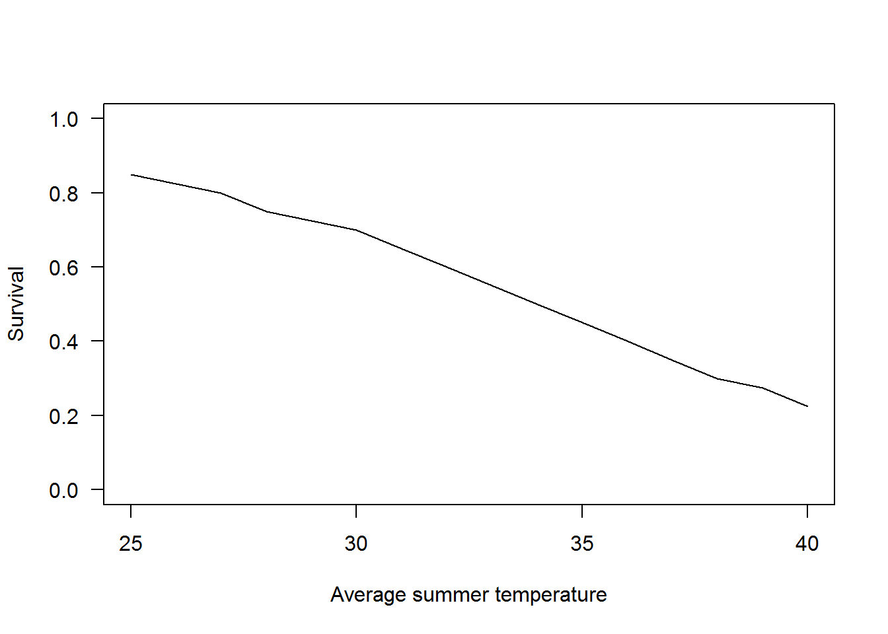
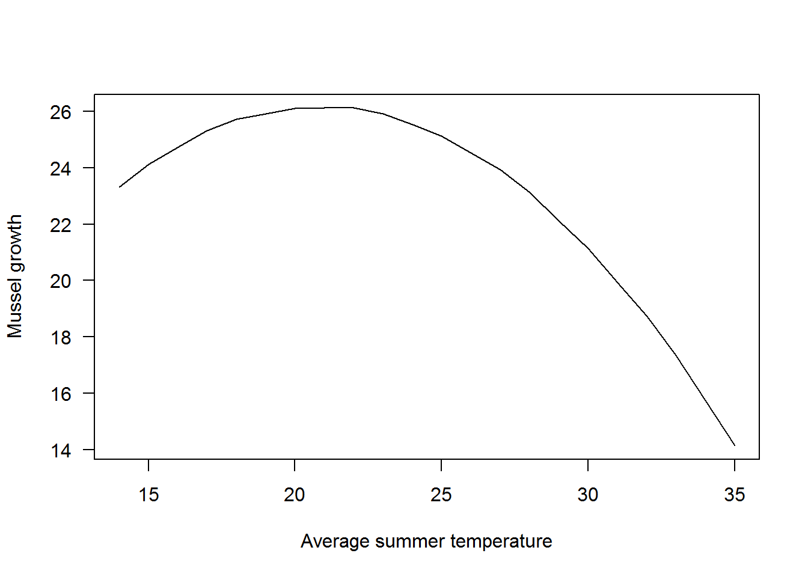
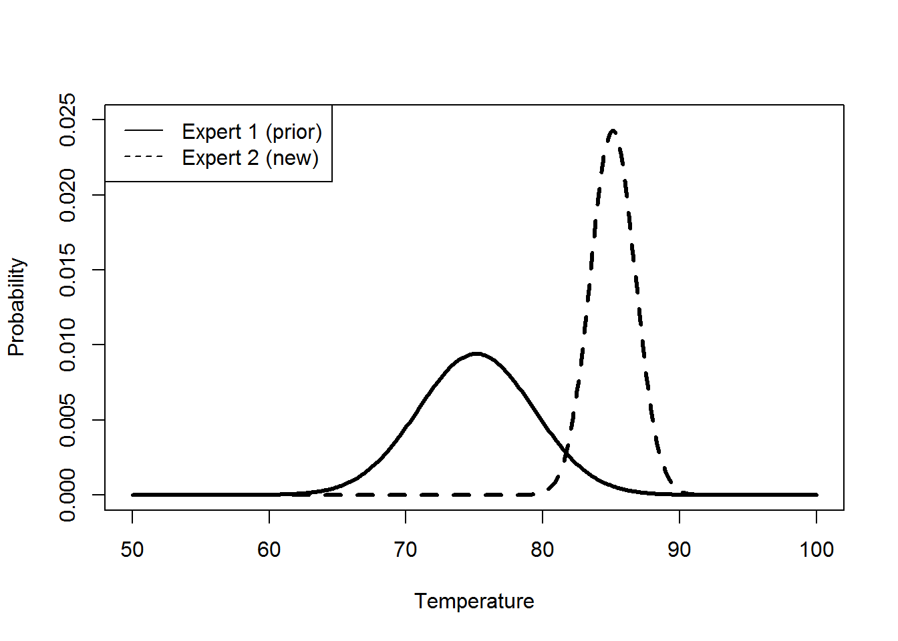
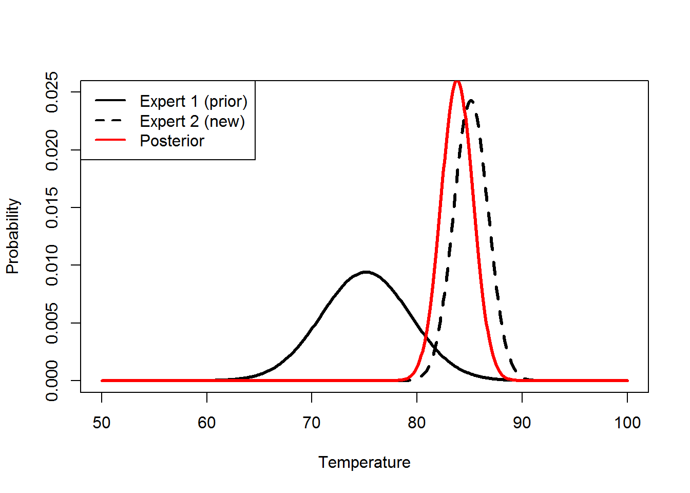

Class 24: Expert elicitation
Class preliminaries
- Supplemental background reading:
- Conroy and Peterson Chapter 6 p 165-191
- Class project presentation during final exam period-April 28th at 3pm.
- Link to class recording YouTube
- Today’s R script Class-24.R
- Today’s Class deck PDF
- A couple of
Rpackages we will be using
# install.packages("fitdistrplus")
# install.packages("Hmisc")Class overview & objectives
The objectives of this class are to:
- Provide background on the use of elicitation to parameterized decision models
- Wrap up class… Where have we been, where did we go?
Vox Populi and elicitation
Let’s take a quick look at a recent elicitation exercise I had you do a week ago. Recall I had you guess the most likely maximum temperature for the following day. Below are the results of that elicitation entered in the data.frame() below.
temp_elic<- data.frame(
id=c(1,2,3,4,5,6,7,8,9,10,11,12,13,14,15,16,17,18),
low=c(68,80,70,79,78,80,76,82,87,50,80,79,77,78,79,85,84,79),
high=c(81,84,90,84,93,86,88,88,78,100,90,92,85,85,85,88,91,89),
likely=c(77,82,85,83,86,83,83,86,83,85,85,86,82,81,81,87,87,85),
confidence=c(75,79,50,40,95,75,80,90,90,25,70,80,80,80,80,5,80,60))
temp_elic## id low high likely confidence
## 1 1 68 81 77 75
## 2 2 80 84 82 79
## 3 3 70 90 85 50
## 4 4 79 84 83 40
## 5 5 78 93 86 95
## 6 6 80 86 83 75
## 7 7 76 88 83 80
## 8 8 82 88 86 90
## 9 9 87 78 83 90
## 10 10 50 100 85 25
## 11 11 80 90 85 70
## 12 12 79 92 86 80
## 13 13 77 85 82 80
## 14 14 78 85 81 80
## 15 15 79 85 81 80
## 16 16 85 88 87 5
## 17 17 84 91 87 80
## 18 18 79 89 85 60Well there was a bit of variability among students in terms of the most likely value. Let’s look at the distribution of likely vales and the true value.
hist(temp_elic$likely,
main="Elicted likely max. temperatures",
xlab="Temperature")
abline(v=mean(temp_elic$likely),col='green',lwd=8) The true value was a whopping 87.
Elicitation and Collective wisdom?
This elicitation is reminiscent of the idea of collective wisdom. This is known as Vox Populi (PDF), where the belief of the majority (i.e., most likely, middle estimate) is a good approximation of reality. The story goes that 787 people voted on the weight of a fat ox in a weight judging competition at the West of England Fat Stock and Poultry Exhibition
In 2015 NPR Planet Money replicated the experiment on the line and got some surprisingly good results for estimating the weight of a dairy cow (PDF). Turns out, experts underestimated by about 6% for a cow. There may be some variation in estimate bias based off of animal size, some suggest that smaller animals like sheep or llamas may be overestimated.
Well that is not too bad, off by a couple of degrees. A sensitivity analysis can help inform the consequences of using elicited data. Eliciting useful expert information can be a difficult task and several approaches have been developed to help analysts elicit information. Let’s look at some ways to use expert elicitation in natural resource decision making contexts.
Eliciting and quantifying expert judgment
Expert information can be used to parameterize decision models. If you have not completed those lessons, please review them before taking this lesson. The use of expert judgment involves asking one or more experts that are familiar with the phenomenon being modeled (e.g., the effects of disease on wildlife populations) to parameterize the relationship between two or more model components. There are two approaches that are categorized by the means of elicitation: 1) direct elicitation and 2) indirect elicitation, and the type of measure provided by the experts: 1) quantitative or 2) qualitative. This class will demonstrate how to quantify and use expert judgment and conduct the analysis using quantitative direct elicitation and indirect elicitation methods. Specifically, we will cover
- Probability elicitation
- Frequency elicitation
- Value elicitation
- Function elicitation
Probability elicitation
Probability elicitation is a direct, quantitative method that requires experts that are familiar and comfortable with statistical concepts, such as probability. Typical type of question used for probability elicitation is:
“Given that the maximum summer water temperature is 33C or greater, what is the probability that an amphibian species will survive?”
Suppose we asked 6 experts this question and received the following, values 0.5, 0.6, 0.45, 0.65, 0.45, 0.7. We could combine the values across experts by treating these values as data and calculating a mean. Uncertainty among experts can be estimated by calculating the variance.
surv<- c(0.5, 0.6, 0.45, 0.65, 0.45, 0.7)
surv_mean<-mean(surv)
surv_var<- var(surv)That gets us a mean and a variance but if we used that to come up with a distribution assuming normality, survival values can exceed 1 or be less than 0.
Uncertainty in a probabilities like survival can be modeled using a beta distribution which is constrained between 0 and 1 (more info). Thus, we could use the method of moments to estimate the parameters of the beta (a, b) from the mean and the standard deviation.
Specifically, the shape parameters \(a\) and \(b\) of a beta distribution can be estimated as:
\[a = \mu\cdot \frac{\mu\cdot(1-\mu)}{\sigma^2-1}\]
and
\[b = (1-\mu)\cdot\frac{\mu\cdot(1-\mu) }{\sigma^2-1}\]
where:
- \(\mu\) is the mean survival, and
- \(\sigma^2\) is the variance.
We can make a function to estiamte \(a\) and \(b\) given some data in R. Fun right?
### beta method of moments
beta.mom<-function(mean,v)
{
x<-mean
a<-x*(x*(1-x)/v-1)
b<-(1-x)*(x*(1-x)/v-1)
c(a,b)
}Now we can feed a mean and a variance and the shape parameters \(a\) and \(b\) are returned.
out<-beta.mom(surv_mean,surv_var)
out## [1] 11.501531 9.098226We could alternatively use maximum likelihood to estimate the 2 beta distribution parameters, \(a\) and \(b\).
This requires using a function that returns the log likelihood for each data point given the parameter estimates and the assumed distribution. The log likelihoods are then summed and that value is iterated for varying over values of \(a\) and \(b\) to find the values that maximize the log likelihood. Optimization behaves pretty well if you can give it a good ball park to start from in terms of estimating \(a\) and \(b\), so we might as well use the method of moments estimates for to start the optimization!
Fortunately there are functions built in to ‘R’ that will do this for us. We can use the fitdist() function to fit a beta distribution to some data and estimate the values of \(a\) and \(b\) that maximize the log likelihood. This function can be called using the fitdistrplus library.
Here we will fit a beta distribution to the survivals.
library(fitdistrplus)## Warning: package 'fitdistrplus' was built under R version 3.1.3fit<- fitdist(data=surv,
distr="beta",
start=c(shape1=out[1],
shape2=out[2]))Sometimes errors will be thrown but this is usually just because the liklihood is being evaluated at boundaries. Let’s look at our estimated \(a\) and \(b\) values.
fit## Fitting of the distribution ' beta ' by maximum likelihood
## Parameters:
## estimate Std. Error
## shape1 14.25455 8.170572
## shape2 11.26283 6.425610Let’s take a look at differences between methods of moments and maximum likelihood estimates.
First we need to generate some outcomes to get the likelihood for.
x<- seq(0,1,0.01) # survivals to plotNow we need to calculate the likilihood for the outcomes given the estimates of \(a\) and \(b\) using the methods of moments.
dmom<- dbeta(x=x,
shape1=out[1],
shape2=out[2])We can also use the same process to using the maximum likelihood estimates.
dmll<- dbeta(x=x,
shape1=fit$estimate[1],
shape2=fit$estimate[2] )Now we can plot the 2 distributions to see if there is anything different.
plot(x=x,y=dmom,
xlab="Survival",
ylab="Likelihood",type='l',
ylim=c(0,4),
las=1)
points(x=x,y=dmll, type='l', lty=2)
legend("topleft",
legend=c("Method of moments","Max. Likelihood"),
lty=c(1,2))
Not too much difference, although there appears to be a bit more certainty around the distribution generated from the maximum likelihood estimates, but the expected values appear to be similar.
Accounting for experience
Often one or more experts have greater experience than others and we have greater faith in the values they provide. Weights are represented using positive numbers with larger numbers representing greater weight. The absolute values of the weights do not matter. Rather it is the relative differences among the weights that are used to weight the values provided by the experts. For example, the weights 1,1,2,1,2,4 are equal to 0.091,0.091,0.182,0.091,0.182,0.364 because the relative proportions are equal. To demonstrate we can use the wtd.mean() and wtd.var() function to estimate the mean and the variance incorporating the expert weights. We need the Hmisc library to get the wtd.mean() and wtd.var() functions.
Let’s make a vector of weights that match up to the vector or survivals.
library(Hmisc)## Warning: package 'Hmisc' was built under R version 3.1.3## Loading required package: lattice## Warning: package 'lattice' was built under R version 3.1.3## Loading required package: survival## Warning: package 'survival' was built under R version 3.1.3## Loading required package: Formula## Warning: package 'Formula' was built under R version 3.1.3## Loading required package: ggplot2## Warning: package 'ggplot2' was built under R version 3.1.3##
## Attaching package: 'Hmisc'## The following objects are masked from 'package:base':
##
## format.pval, round.POSIXt, trunc.POSIXt, units# weights as whole numbers
wt1<-c(1,1,2,1,2,4)
# weights as proportions
wt2<- wt1/sum(wt1)Now we can use the wtd.mean() and wtd.var() function to account for expertise and experience.
#means
wtd.mean(surv,wt1)## [1] 0.5772727wtd.mean(surv,wt2)## [1] 0.5772727#variance
wtd.var(surv,wt1)## [1] 0.01368182#wtd.var(surv,wt2) will not work, needs integer values!Now we can use those weighted values to calculate the estimates of \(a\) and \(b\) for the beta distribution.
out_w<-beta.mom(mean=wtd.mean(surv,wt1),
v=wtd.var(surv,wt1))
out_w## [1] 9.718964 7.117037Here we calculated weighted and unweighted means and variances of these survival values provided by experts. Using those values we then calculated the parameters of a beta distribution using either method of movements or maximum likelihood.
S<- seq(0,1,0.01)
unweighted<-dbeta(S,
shape1=out[1],
shape2=out[2])
weighted<-dbeta(S,
shape1=out_w[1],
shape2= out_w[2])We can visualize the effect by plotting the probability density for the beta distribution estimated from the unweighted and weighted mean and variance. It should be different. Let’s take a look.
plot(S,unweighted,
col="black",
type='l',
ylab="Density",
lwd=2,
ylim=c(0,4),
las=1)
points(S,weighted,
col="red",
type='l',
lwd=2)
legend("topleft",
legend=c("unweighted", "weighted"),
lty=1,
col=c("black","red"))
Weighting the experts’ estimates moved the location to be closer to 0.6 and increased the uncertainty (spread) around the location.
Things to consider here are that the use of expert information and weighted can be good, but it can also be bad… It may be possible to ‘game’ the system if an expert or experts are given an undue amount of weight. So it might be prudent to run analysis/simulations both ways to assess whether the effect of weighting has a dramatic effect on the decision.
Conditional probability tables
In some instances, you will need to ask experts to fill out conditional probability tables that are used in influence diagrams and then combine these values across experts. For example, suppose that we asked 3 experts to fill out the following tables for estimating species status:
| Expert | Snag density | Forest canopy | Absent | Rare | Abundant |
|---|---|---|---|---|---|
| expert 1 | Many | Open | 0.36 | 0.36 | 0.29 |
| Many | Closed | 0.15 | 0.35 | 0.5 | |
| Few | Open | 0.67 | 0.25 | 0.08 | |
| Few | Closed | 0.44 | 0.38 | 0.19 | |
| expert2 | Many | Open | 0.37 | 0.45 | 0.18 |
| Many | Closed | 0.17 | 0.41 | 0.41 | |
| Few | Open | 0.69 | 0.28 | 0.03 | |
| Few | Closed | 0.51 | 0.47 | 0.01 | |
| expert3 | Many | Open | 0.36 | 0.38 | 0.26 |
| Many | Closed | 0.17 | 0.43 | 0.41 | |
| Few | Open | 0.66 | 0.3 | 0.03 | |
| Few | Closed | 0.56 | 0.42 | 0.03 |
As before, we can calculate the means and weighted means of the probabilities in corresponding cells. However, be careful that the correct cells are selected as below or that you read each expert table as a matrix and you manipulate it that way.
Here are the probabilities for absent.
# Absent
Many.Open<-c(0.36,0.37,0.36)
Many.Closed<-c(0.15,0.17,0.17)
Few.Open<-c(0.67,0.69,0.66)
Few.Closed<-c(0.44,0.51,0.56)The Means are calculated as:
#means
mean(Many.Open)## [1] 0.3633333mean(Many.Closed)## [1] 0.1633333mean(Few.Open)## [1] 0.6733333mean(Few.Closed)## [1] 0.5033333Let’s try weighting like we did before. Here Expert 3 carries a lot of weight.
#expert weights
wt<-c(5,10,100)Here we use the wtd.mean() function to calculate the weighted means.
#weighted means
wtd.mean(Many.Open,wt)## [1] 0.3608696wtd.mean(Many.Closed,wt)## [1] 0.1691304wtd.mean(Few.Open,wt)## [1] 0.6630435wtd.mean(Few.Closed,wt)## [1] 0.5504348Now you can work through all the values and calculate a single conditional probability table.
Frequency elicitation
Frequency elicitation is an indirect, quantitative method that does not require experts that are familiar and comfortable with statistical concepts. Typical type of question for frequency elicitation is:
“100 individuals from an amphibian species are exposed to temperatures > 33C, how many will survive?”
These values can be used to calculate probabilities and average across experts. For example assume, that 4 experts answered the above question by providing the following values: 50, 30, 25, and 40. We can calculate the probability of survival as the number surviving divided by 100.
number_surv<-c(50, 30, 25, 40)
#remember 100 individuals
probability_surv<-number_surv/100Now we can calculate the mean and the variance.
mean(probability_surv)## [1] 0.3625var(probability_surv)## [1] 0.01229167Here we also could use weighting scheme and use the method of moments or maximum likelihood approach to estimate the parameters of a beta distribution, if we desired. Alternatively, we could use the values directly to estimate the parameters of a beta distribution. Remember that the parameters of a beta distribution represent: a = number of successes (e.g., survivors) and b = the number of losses (e.g. deaths), so we have
number_surv<-c(50, 30, 25, 40)
number_die<- 100-number_surv
#let's see what that gets us in terms of means and variance for probability
p_s<-rbeta(1000,number_surv,number_die)
mean(p_s)## [1] 0.3607249var(p_s)## [1] 0.01133936The mean value was fairly close as was the variance. If we wanted to weight experts differently, we could rescale the values. For example, assume that expert 1 and 2, should receive half the weight of experts 3 and 4. We could do the following so the denominators are now 50, 50, 100, and 100 and therefore the number of survivors and number that die change.
number_surv<-c(25, 15, 25, 40)
number_die<-c(25, 35, 75, 60)
totals<-number_surv+number_die
totals ## notice that the sum of survive and die for expert 1 and 2 is 50## [1] 50 50 100 100p_s<-rbeta(1000,number_surv,number_die)
mean(p_s)## [1] 0.3627654var(p_s)## [1] 0.01234249We need to keep in mind that the variance on the beta is influenced by the size of the parameters.
For example, here is what happens when we increase the sample size to 100 from 1.
p_s<-rbeta(1000,1,1)
mean(p_s)## [1] 0.5014522var(p_s)## [1] 0.08331411#expected value the same, variance different
p_s<-rbeta(1000,100,100)
mean(p_s)## [1] 0.4998658var(p_s)## [1] 0.001200295The variance is much smaller when \(a\) and \(b\) are larger. So some caution is appropriate to not unduly minimize uncertainty.
Value elicitation
Value elicitation is a direct, quantitative method that does not require experts that are familiar and comfortable with statistical concepts. Typical type of question for value elicitation is:
“What is the LD50 temperature for an amphibian species? (LD50 is the temperature where 50% of animals die).”
Assume that we received the following answers from 6 experts: 30, 31, 35, 37, 32, 34.5. We can calculate the mean and the standard deviation. We are using standard deviation here because we are going to assume normality.
temp<-c(30, 31, 35, 37, 32, 34.5)
mean(temp)## [1] 33.25sd(temp)## [1] 2.678619These parameters can then be used to parameterize relations among model components. For example, what is the probability that 50% of the amphibians will die as temperatures reach 34 degrees:
pnorm(34,mean(temp),sd(temp))## [1] 0.6102593In other words there is a 60% chance that 50% of the amphibians will die given the expert opinion and a temperature of 34 degrees.
Function elicitation
Function elicitation is an indirect, quantitative method that does not require experts that are familiar and comfortable with statistical concepts. Here, experts define the functional relationship between two or more model components using a graphical representation. For example, an expert is asked to define the relation between amphibian survival and summer temperatures by drawing a line on paper or in a spreadsheet (Example).
For a simpler example, let’s look at the figure below that was drawn by an expert:

This drawn relationship needs to be turned into a function. The first step is to estimate the survival values where the cross the summer temperatures. Doing so would get you the data contained in the expertDat below.
expertDat<- data.frame(
ave_summer_temp = c(25,26,27,28,
29,30,31,32,33,34,35,36,
37,38,39,40),
est_survival = c(0.85,0.825,
0.8,0.75,0.725,0.7,0.65,0.6,
0.55,0.5,0.45,
0.4,0.35,0.3,
0.275,0.225))
expertDat## ave_summer_temp est_survival
## 1 25 0.850
## 2 26 0.825
## 3 27 0.800
## 4 28 0.750
## 5 29 0.725
## 6 30 0.700
## 7 31 0.650
## 8 32 0.600
## 9 33 0.550
## 10 34 0.500
## 11 35 0.450
## 12 36 0.400
## 13 37 0.350
## 14 38 0.300
## 15 39 0.275
## 16 40 0.225Because we are modeling a probability, logit-linear regression model seems appropriate. However, R requires the response to be binary and in live, dead format. For convenience, let’s assume that we began with 100 individuals and calculate the number surviving and dying based on the probabilities estimates from the figure drawn by the expert. We then have:
surv<-round(expertDat$est_survival*100)
died<-100-surv
response<-cbind(surv,died)
glm(response ~ expertDat$ave_summer_temp,
fam=binomial)##
## Call: glm(formula = response ~ expertDat$ave_summer_temp, family = binomial)
##
## Coefficients:
## (Intercept) expertDat$ave_summer_temp
## 6.6889 -0.1971
##
## Degrees of Freedom: 15 Total (i.e. Null); 14 Residual
## Null Deviance: 275.6
## Residual Deviance: 0.5251 AIC: 82.16The function for defining this relationship is a logit linear model \(6.689 - 0.197 \cdot temperature\). To incorporate the variability among experts, the slopes and intercepts could be averaged and the averages used to parameterize the model, or maybe a hierarchical model used.
Let’s use the graph below created from musselDat to estimate a function that will closely approximate the expert’s belief of the relationship between mussel growth and temperature.
We can use the graph below to estimate a function that will close approximate the expert’s belief of the relationship between mussel growth and temperature.
musselDat<- data.frame(ave_summer_temp=c(14,15,16,17,18,19,
20,21,22,23,24,25,26,27,28,29,30,31,32,33,34,35),
mussel_growth=c(23.314,24.115,24.716,25.317,25.718,
25.919,26.120,26.121,26.122,25.923,25.524,25.125,24.526,
23.927,23.128,22.129,21.130,19.931,18.732,17.333,15.734,
14.135))
plot(mussel_growth~ave_summer_temp,
data=musselDat,
xlab= "Average summer temperature",
ylab="Mussel growth",
las=1,
type='l')
The relationship looks nonlinear maybe need a quadratic term
musselDat$ave_summer_tempsq<-musselDat$ave_summer_temp^2
mod<-lm(mussel_growth ~ ave_summer_temp + ave_summer_tempsq, musselDat)Plot the function to make sure it represents the expert figure
temp<-c(14:35)
pred<-predict(mod,ave_summer_temp = temp)
plot(pred~temp,
lty=1,
type = "l",
lwd=1,
ylab="Mussel growth",
xlab="Average temperature",
las=1)
points(mussel_growth~ave_summer_temp,musselDat)
legend("topright",c("Predicted","Elicited"),pch=c(NA,1),lty=c(1,NA))Looks good, we can now use that function to make predictions of things like a change in temperature on growth.
Quantifying uncertainty in expert judgment
To minimize the effect of overconfidence, it is recommended to use the four step process to uncertainty elicitation proposed by Speirs-Bridge et al. (2010). In the 4 step process, experts are asked the following 4 questions:
- What do you think the lowest value could be? ____
- What do you think the highest value could be? ____
- What is your most likely estimate?___
- How confident (%) are you that the interval you created, from lowest highest, will capture the true value? ___
For example, 100 individuals from an amphibian species are exposed 33C temperatures.
- What are the fewest number that would survive? ____
- What are the most that would survive? ____
- What is your most likely estimate of the number surviving?___
- How confident (%) are you that the interval you created, from lowest highest, will capture the true value? ___
Let’s assume that we asked an expert the first question above: Given that the maximum summer water temperature is 33C or greater, what is the probability that an amphibian species will survive
- What do you think the lowest value could be? 0.25
- What do you think the highest value could be? 0.9
- What is your most likely estimate? 0.55
- How confident (%) are you that the interval you created, from lowest highest,will capture the true value? 0.9
To estimate the parameters, we need to find the beta distribution that best fits those conditions, i.e., a median value of 0.5 and upper and lower 90% confidence limits of 0.25 to 0.9. WE can fit these parameters in R using teh qmeddist() fuction in the fitdistplus package. We can do this with the following code:
First we need to make a vector of values from the expert.
## lower, median, and upper survival values
w<-c(0.25, 0.55, 0.9)Now we can set up the fitting given 90% confidence by the expert. Since our confidence is 2 sided it the minimum and maximum end up being the 5 and 95 percentile.
### load library first
library(fitdistrplus)
# 90% confidence so specify lower 5 and upper 95 percentiles
est<-qmedist(data=w,
distr="beta",
probs=c(0.05,0.95))
parms<-est$estimate
parms## shape1 shape2
## 3.906427 2.729426Let’s see how close we got
test<-rbeta(1000,parms[1],parms[2])
quantile(test,c(0.05,0.5,0.95))## 5% 50% 95%
## 0.2772954 0.6038069 0.8738369Not too bad considering expert’s judgments don’t always follow the laws of probability. Note that shape1 is alpha and shape2 is beta for the beta distribution. We could combine these across experts using the Bayesian methods we used earlier.
Let’s try the same thing, but this time asking: What is the LD50 temperature for an amphibian species?
- What do you think the lowest value could be? 33
- What do you think the highest value could be? 39
- What is your most likely estimate?35
- How confident (%) are you that the interval you created, from lowest highest, will capture the true value? 0.8
The corresponding R code and output are:
## lower, mean, and upper values
w<-c(33, 35, 39)
library(fitdistrplus)
# 80% confidence so specify lower 10 and upper 90 percentiles
est<-qmedist(w, "norm", probs=c(0.10, 0.90))Don’t worry about the warnings if it throws them, the functions is just being evaluated at some boundary locations
parms<-est$estimate
parms## mean sd
## 35.799954 1.872723## lets see how close we got
test<-rnorm(1000,parms[1],parms[2])
quantile(test,c(0.10,0.5,0.90))## 10% 50% 90%
## 33.52439 35.85813 38.27675As before, the estimates are not too bad and they can be combined across experts using prior and posterior techniques we learned in lab 6.
Eliciting maximum temperature
A week ago we asked the question:
_“What will be the maximum temperature tomorrow?”)
I use dthe 4 step process to obtain your estimates and levels of confidence.
Now we can estimate the parameters for a normal distribution using the above process in R. Combine the estimates for the two experts using the Bayesian prior and posterior approach detailed in Lab 6.
For this example our data is as follows:
| Value | Expert 1 | Expert 2 |
|---|---|---|
| Lowest value | 68 | 82 |
| Highest value | 81 | 88 |
| Most likely value | 77 | 86 |
| Confidence level (%) | 75 | 90 |
w<-c(68,77,81)
c<-0.75 # CONFIDENCE
CI<-c((1-c)/2,1-(1-c)/2) # CONFIDENCE INTERVAL
est<-qmedist(w,"norm",probs=CI)
parms1<-est$estimate
parms1## mean sd
## 75.125029 4.237909Note: The NAs produced are just part of the optimization. We can use simulation to evaluate our estimates.
test<-rnorm(1000,parms1[1],parms1[2])
quantile(test,c(0.005,0.5,0.995))## 0.5% 50% 99.5%
## 63.69695 74.92230 84.55403Now we can look at expert 2 and repeat the process.
#lower, median, and upper values from Expert 2
w<-c(82,86,88)
c<-0.9
CI<-c((1-c)/2,1-(1-c)/2)
est<-qmedist(w,"norm",probs=CI)
#Estimates
parms2<-est$estimate
parms2## mean sd
## 85.100141 1.641456test<-rnorm(1000,parms2[1],parms2[2])
quantile(test,c(0.01,0.5,0.99))## 1% 50% 99%
## 81.22705 85.13921 88.88598We can combine the estimates for the two experts using the Bayesian prior and posterior approach. Here we will use the estimates for expert 1 as the prior. All we need to do is calculate the probability for each outcome, in this case \(\mu\) is between 20 and 90 given the parameter estimates for expert 1.
mu<-seq(50,100,0.1) # possible outcomes
expert1_lik<-dnorm(x=mu,
mean=parms1[1],
sd=parms1[2])
expert1_lik<- expert1_lik/sum(expert1_lik) # integrate to 1Now we add the data from expert 2 and update the posterior.
#Addition of second expert
expert2_lik<-dnorm(mu,parms2[1],parms2[2])
expert2_lik<- expert2_lik/sum(expert2_lik)
prior<- expert1_lik/sum(expert1_lik) # integrate to 1
plot(x=mu,
y=prior,
col="black",
lty=1,
lwd=3,
type='l',
ylim=c(0,0.025),
ylab="Probability",
xlab="Temperature")
lines(x=mu,
y=expert2_lik,
col="black",
lty=2,
lwd=3,
type='l')
legend("topleft",c("Expert 1 (prior)",
"Expert 2 (new)"),
lty=c(1,2),
col=c("black","black"))
Now we can combine the information from both experts by multiplying the likelihood of each outcome assuming expert 1 is the prior and expert 2 is new information and then we divide by the sum of the prior times the new likelihood for each outcome.
post<-(prior*expert2_lik)/sum(prior*expert2_lik)Lets look at this and see what the prior (expert 1 data only) and posterior (expert 1 and expert 2’s data).
plot(x=mu,
y=prior,
col="black",
lty=1,
lwd=3,
type='l',
ylim=c(0,0.025),
ylab="Probability",
xlab="Temperature")
lines(x=mu,
y=expert2_lik,
col="black",
lty=2,
lwd=3,
type='l')
lines(mu,post,
col="red",
lty=1,
lwd=3)
legend("topleft",c("Expert 1 (prior)",
"Expert 2 (new)",
"Posterior"),
lty=c(1,2,1),
lwd=2,
col=c("black","black","red"))
In the red line we can see the incorporation of expert 2’s information which decreases the uncertainty (spread) and moves the mean in between the prior and the new information. Overall you iterate over multiple experts using Bayes rule to incorporate everybodies information.